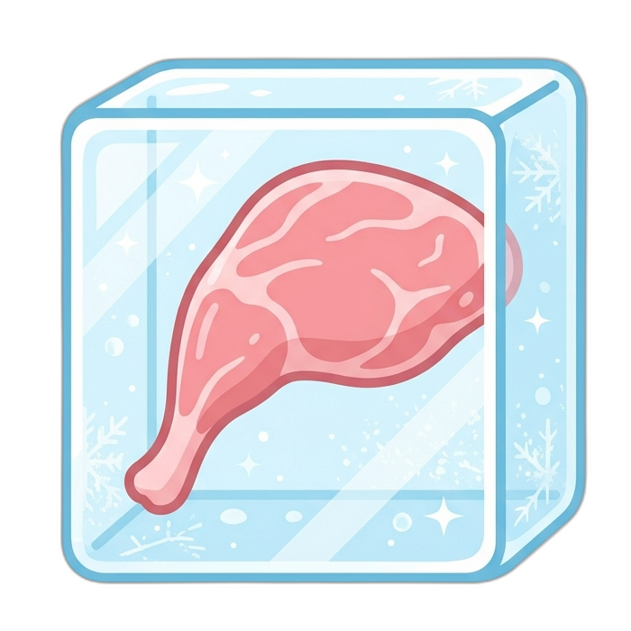
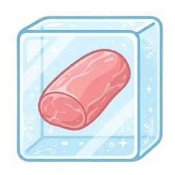

拾穗人的委託
拾起留在舊站的筆記與收藏，帶往下一段旅程。
請使用曾經開啟工坊或秘笈的瀏覽器，下載下方的 JSON 備份檔，留待新站開放搬家匯入後使用。

冷凍兔肉的工坊

冷凍兔肉的秘笈
資料只在此瀏覽器讀取，不會上傳；下載也不會刪除舊站資料。
拾起留在舊站的筆記與收藏，帶往下一段旅程。
請使用曾經開啟工坊或秘笈的瀏覽器，下載下方的 JSON 備份檔，留待新站開放搬家匯入後使用。


資料只在此瀏覽器讀取，不會上傳；下載也不會刪除舊站資料。